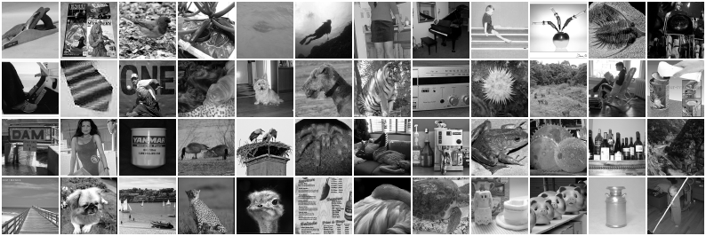
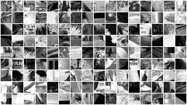

the doc 01 zoo on 16 x 16 patches of ImageNet-64, whitened and raw: are the Gabor statistics there?
why this page exists, what was run on ImageNet-64, the findings, and the images themselves
Purpose
Doc 01 found localised, oriented Gabor filters with every classical method on 16 × 16 patches of Olshausen's ten whitened images.
Doc 02 trains networks on ImageNet-64 and finds filters that are oriented but less localised. Before reading anything into that
difference, this page asks the prior question (James, 2026-10-29): are the statistics that give Gabors present in ImageNet-64 at all?
If the classical methods do not find Gabors here, a network cannot be expected to, and the doc 02 rerun must use data that has them.
The whole doc 01 zoo is therefore run on 16 × 16 luminance patches of ImageNet-64, each method at the configuration its doc 01 tab shows,
and each method both on whitened patches (PCA-whitened with the eigenvalue floor of doc 01; for Olshausen-Field, the same whitening
applied in pixel space) and on raw patches (nothing but centring; the ICA family then only projects onto the top \(M\) principal
components, keeping their variances). Whitened versus raw is the first menu on every tab. Every run saves 100 log-spaced checkpoints and
the sliders show them all (about a factor 1.1 between frames).
How a filter is judged: doc 01's instrument. A 2-D Gabor is fitted to each basis function; oriented means fit
\(R^2 \ge 0.8\) with at least 0.75 carrier cycles across the patch, localised means oriented with a Gaussian envelope at most a quarter
of the patch. Each tab's info line quotes the same method's numbers on Olshausen's images beside this set's.
Every run against the same method on Olshausen's images
Classes of the fitted Gabor (fit \(R^2 \ge 0.8\)): Gabor = at least 0.75 carrier cycles across the patch (doc 01's "oriented");
edge = fewer cycles, odd carrier and elongated envelope, i.e. a derivative-of-Gaussian edge detector (the fit describes it as a ramp
times a Gaussian, with a near-zero frequency, which is why the doc 01 "oriented" count misses it); blob = the remaining good fits;
"localised" = envelope at most a quarter of the patch. The edge class was added for this page, after the pictures showed the whitened
CIFAR filters to be oriented and compact while the oriented count said 0-6%.
Click a header to sort. 'Olshausen' columns: the doc 01 run with the same method and configuration (whitened Olshausen images).
Findings (2026-10-29, 15:01)
Same answer as CIFAR. On whitened 16 × 16 ImageNet-64 patches, Olshausen-Field sparse coding gives 72% localised Gabor
wavelets at \(M = 64\) (\(R^2\) 0.87) and 70% at \(M = 256\) (\(R^2\) 0.91; 2-3 pixel units), against 64% on Olshausen's images: the
statistics that give Gabor wavelets are present in ImageNet-64 as much as in Bruno's ten images.
Every other method finds edges. FastICA, projection pursuit, Infomax, the Hebbian rule and the AGF climbs give localised oriented
edge and bar detectors on the whitened patches (41-79% edges, 7-22% Gabors at \(M = 64\)); at \(M \ge 192\) the ICA family is mostly poor
fits (70-88%). ImageNet's filters are a little larger and rougher than CIFAR's (median envelope 0.4 of the patch against 0.3), with more
checkerboard-like units, the aliasing of the 64-pixel downsampling.
Whitening is necessary here too: raw patches give ICA noise, gratings from the Hebbian rule and projection pursuit, the top
principal component from the AGF climb, and sparse coding 0-4% Gabors with 31-39% edges.
Why edges and not wavelets. Olshausen's images are whitened and low-pass filtered (\(R(f) = f\,e^{-(f/f_0)^4}\), \(f_0\) at 0.78 of
Nyquist), so their finest structure is a few pixels wide and the ICA filters come out smooth. ImageNet-64 images are downsampled photographs
whose finest structure is the pixel; whitening flattens the spectrum all the way to Nyquist, and the most non-Gaussian projection of such
patches is the sharpest edge, one pixel wide. Sparse coding is different: it is a generative model with a noise term, so it prefers a
dictionary of smooth, reusable parts to pixel-sharp ones, and it recovers wavelets. A larger whitening floor (a crude low-pass; the
\(\epsilon\) runs on tab c) does not rescue ICA: \(10^{-3}\) changes nothing, \(10^{-2}\) turns the edges into gratings and checkerboards, \(10^{-1}\)
leaves noise.
What this means for doc 02. The oriented, often grating-like first-layer filters of the CNNs on ImageNet-64 are what every
projection-based method finds on this data; the Gabor wavelets of doc 01 come from the sparse generative objective, not from the images
alone. Whitened versus raw is decisive for every method here, which is the knob the CNNs have not yet been given.
The images
The first 50,000 imagenet training images downsampled to 64 × 64 pixels, converted to luminance and standardised: 205 million pixels (Olshausen's ten images: 2.6 million). Shown: the first 48, at 192 px (luminance).

Patches. 144 random 16 × 16 patches, each scaled to its own range. A 16 × 16 patch is a quarter of a CIFAR image's side, a
sixteenth of its area; on Olshausen's 512-pixel images it was a thousandth of the area.

Olshausen's images are whitened and low-pass filtered, so their spectrum is flat then falls off a cliff; natural luminance patches fall as a power law from the first component. Whitening flattens this; 'raw' leaves it.
doc 01's 01b on ImageNet-64 patches, whitened and raw
Purpose. Does doc 01's 01b (olshausen-field sparse coding) find on ImageNet-64 what it found on Olshausen's images, and does it need the patches whitened?
Method. Olshausen & Field (1996): a generative model \(x = A a + \text{noise}\) with a sparse prior on the
coefficients. Per patch, infer \(a\) by minimising \(E(a) = \tfrac{1}{2\sigma_n^2}\|x - Aa\|^2 + \tfrac{\beta}{\sigma}\sum_i \log(1 + a_i^2/\sigma^2)\)
(Cauchy prior; here 200 accelerated-gradient steps from \(a = 0\)); then take a Hebbian step on the basis,
\(A \leftarrow A + \eta\,(x - Aa)\,a^{\top}/B\), and rescale each column so that its coefficient's running variance drifts towards a
target (sparsenet.m's gain homeostasis). Knobs: \(\sigma_n^2 = 0.01\), \(\beta = 2.2\), \(\sigma = 0.316\), \(\eta = 1\), batch
\(B = 100\), variance goal 0.1 with rates 0.001 and 0.02, plus the inference budget: eight, all at sparsenet.m's values.
Time = learning steps (batches of 100 patches). Shown first is the simpler variant that drops the homeostasis and just keeps every
column at unit norm (five knobs): at 20,000 steps it is the best Olshausen-Field run of the battery; the homeostatic runs are in the table.
steps
Basis functions in settle order (first learned first), every checkpoint of the run on the slider. Menus cascade.
doc 01's 01c on ImageNet-64 patches, whitened and raw
Purpose. Does doc 01's 01c (ica (fastica, all units at once)) find on ImageNet-64 what it found on Olshausen's images, and does it need the patches whitened?
Method. Hyvärinen's FastICA. Centre the patches and PCA-whiten them to \(M\) dimensions, \(z = V(x - \mu)\);
look for an orthogonal \(W\) whose rows give maximally non-Gaussian projections \(s = Wz\), by the fixed-point iteration
\(w \leftarrow \mathbb{E}[z\,g(w^{\top}z)] - \mathbb{E}[g'(w^{\top}z)]\,w\) on every row at once, followed by symmetric
decorrelation \(W \leftarrow (WW^{\top})^{-1/2}W\). \(g = \tanh\) (the \(\log\cosh\) contrast), \(g(u) = u^3\) (kurtosis) or
\(g(u) = u e^{-u^2/2}\). Shown: the basis functions, i.e. the columns of \(V^{-1}W^{\top}\) back in pixel space. Knobs:
the number of PCA components \(M\) and the contrast function: two. No learning rate. Time = fixed-point iterations, each a
pass over a fixed set of 100,000 patches. The images' low-pass filter leaves the last ~30 of 256 principal directions with
\(< 10^{-4}\) of the top variance, so whitening to all 256 amplifies noise (a run at \(M = 256\) without a floor went NaN);
the eigenvalues are floored at \(10^{-4}\) of the largest.
steps
Basis functions in settle order (first learned first), every checkpoint of the run on the slider. Menus cascade.
doc 01's 01d on ImageNet-64 patches, whitened and raw
Purpose. Does doc 01's 01d (projection pursuit (one unit at a time)) find on ImageNet-64 what it found on Olshausen's images, and does it need the patches whitened?
Method. The same fixed-point update as 01c, but on a single direction \(w\) until it stops moving
(\(1 - |w_{\text{new}}\cdot w| < 10^{-6}\)), orthogonalised against the directions already found; then the next one. This is
projection pursuit (Friedman & Tukey) with FastICA's contrast as the projection index, and it is the literal version of
"find one, let it solidify, find the next". The layout here is the order of discovery. Knobs: \(M\), the contrast,
and a convergence tolerance: three. Time = cumulative one-unit iterations; the per-unit charts below say how many
iterations each unit took.
steps
Basis functions in settle order (first learned first), every checkpoint of the run on the slider. Menus cascade.
doc 01's 01e on ImageNet-64 patches, whitened and raw
Purpose. Does doc 01's 01e (nonlinear hebbian rule) find on ImageNet-64 what it found on Olshausen's images, and does it need the patches whitened?
Method. On whitened patches: \(W \leftarrow W + \eta\,g(Wz)\,z^{\top}/B\) on a minibatch, then symmetric
orthonormalisation, with \(g(u) = u^3\). That is stochastic gradient ascent on the fourth moment of every unit under an
orthonormality constraint, the nonlinear Hebbian (Oja-type) rule of Hyvärinen & Oja (1998): a Hebb rule with a
cubic output nonlinearity and nothing else. Knobs: \(M\) and one learning rate: two. Time = minibatch steps.
steps
Basis functions in settle order (first learned first), every checkpoint of the run on the slider. Menus cascade.
doc 01's 01f on ImageNet-64 patches, whitened and raw
Purpose. Does doc 01's 01f (infomax ica (bell-sejnowski)) find on ImageNet-64 what it found on Olshausen's images, and does it need the patches whitened?
Method. Bell & Sejnowski (1997): maximise the entropy of \(\tanh(Wz)\), which is maximum likelihood
with a fixed super-Gaussian (logistic) prior on the sources. Natural-gradient minibatch updates
\(W \leftarrow W + \eta\,(I - 2\tanh(u)\,u^{\top}/B)\,W\), \(u = Wz\), from \(W = I\). Shown: the columns of \(W^{-1}\) mapped back to pixel space.
Knobs: \(M\) and the learning rate: two. Time = minibatch steps (B = 100).
steps
Basis functions in settle order (first learned first), every checkpoint of the run on the slider. Menus cascade.
doc 01's 01g on ImageNet-64 patches, whitened and raw
Purpose. Does doc 01's 01g (agf utility maximisation) find on ImageNet-64 what it found on Olshausen's images, and does it need the patches whitened?
Method. The utility-maximisation step of Alternating Gradient Flows (Kunin et al. 2025). In a two-layer
network \(f(x) = \sum_i a_i\,\sigma(w_i\cdot x)\) trained from small initialisation, a dormant neuron's direction follows projected
gradient flow on the unit sphere of its utility \(\mathcal U(w) = \mathbb E_x[(y - f(x))\,\sigma(w\cdot x)]\), the correlation of its
output with the residual; the first neuron whose accumulated utility crosses threshold activates. Here the target is the constant
\(y = 1\) and the network starts at \(f = 0\), so every dormant neuron climbs \(\mathcal U(w) = \mathbb E[\sigma(w\cdot z)]\) on PCA-whitened
patches \(z\), where every direction has unit variance and only the shape of the projection's distribution can differ. With
\(\sigma(z) = |z|^\alpha\) that is the \(\alpha\)-th absolute moment: \(\alpha = 4\) is kurtosis maximisation, \(\alpha < 2\) is
maximised by sub-Gaussian directions. \(\sigma = \mathrm{relu}(z)^\alpha\) and \(\sigma = \mathrm{sign}(z)|z|^\alpha\) are the
one-sided and odd versions. 256 neurons climb independently from random directions (no orthogonalisation, no deflation: what a
wide network's hidden layer does); the questions are what the local maxima look like and how many distinct ones the neurons find.
Knobs: \(\alpha\), the sign convention, the step angle (0.02 rad per step, gradient direction only): three. Time =
sphere-ascent steps, each a pass over 50,000 patches. Runs named agfseq_* run the AGF sequence proper: the
best-converged dormant neuron activates, its amplitude is fitted to the residual, and the rest climb the new residual's utility.
The menus below select the run; \(\alpha = 2\) on whitened data is flat by construction (every direction has unit variance), so the
whitened \(\alpha\) list skips it and the unwhitened runs show the principal-component limit instead.
sphere-ascent steps
Basis functions in settle order (first learned first), every checkpoint of the run on the slider. Menus cascade.
doc 01's 01h on ImageNet-64 patches, whitened and raw
Purpose. Does doc 01's 01h (agf with the patch as target) find on ImageNet-64 what it found on Olshausen's images, and does it need the patches whitened?
Method. As in 01g, but the network reconstructs its input: \(f(z) = \sum_i a_i\,\sigma(w_i\cdot z)\) with vector output
weights \(a_i\) and target \(y = z\). A dormant neuron's utility, with \(a_i\) optimally aligned, is \(\mathcal U(w) = \|\mathbb E[r(z)\,\sigma(w\cdot z)]\|\),
the norm of the cross-correlation between the residual \(r = z - f(z)\) and the neuron's activation. Even nonlinearities have zero utility on
sign-symmetric data, so this tab uses \(\mathrm{sign}(z)|z|^\alpha\) and \(\mathrm{relu}(z)^\alpha\) (\(\alpha = 1\), odd, is PCA on the residual).
All 256 dormant neurons climb; every 50 steps the one with the largest utility activates, all active output vectors are refitted to the
target by least squares, and the residual shrinks, so the later neurons are climbing a different landscape: the constant-target version
(01g) could not do this. Knobs: \(\alpha\), the sign convention, the step angle, the activation interval: four. Time = sphere-ascent
steps, each a pass over 20,000 patches. The slider shows the input directions \(w_i\) (settle order); the chart tracks the residual.
sphere-ascent steps
Basis functions in settle order (first learned first), every checkpoint of the run on the slider. Menus cascade.
doc 01's 01i on ImageNet-64 patches, whitened and raw
Purpose. Does doc 01's 01i (iterated agf, one neuron at a time) find on ImageNet-64 what it found on Olshausen's images, and does it need the patches whitened?
Method. James's iterated version of 01h. A single fresh neuron climbs the utility
\(\mathcal U(w) = \|\mathbb E[r(z)\,\sigma(w\cdot z)]\|\) of the current residual from a random direction, with a decaying step
(\(0.05 \times 0.95^k\) radians, 150 steps, so it has converged when its budget ends); it is then frozen, every frozen neuron's output
vector is refitted to the target by least squares, the residual shrinks by what the new feature explains, and the next neuron starts.
The residual is eaten one feature at a time, so this is projection pursuit (01d) with the reconstruction residual doing the deflation
instead of orthogonalisation. Target \(y = z\): whitened patches, or ("unwhitened") the patches projected onto their top \(M\) principal
components with the variances kept, where \(\alpha = 1\) odd must give the principal components in order. Knobs: \(\alpha\), the
sign convention, the step schedule: three. Time = ascent steps, cumulative over neurons (150 per neuron); the layout is the order the
neurons were found, which is the only order there is.
ascent steps, cumulative over neurons
Basis functions in settle order (first learned first), every checkpoint of the run on the slider. Menus cascade.